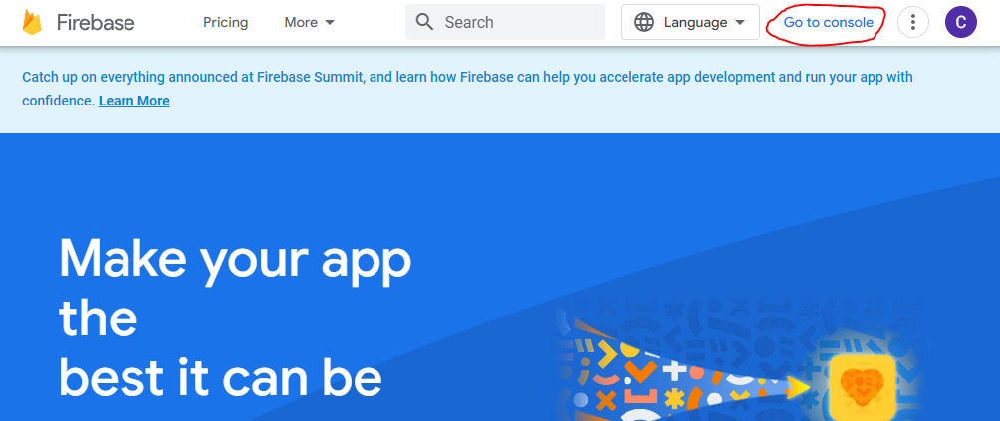
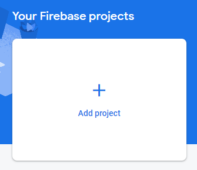
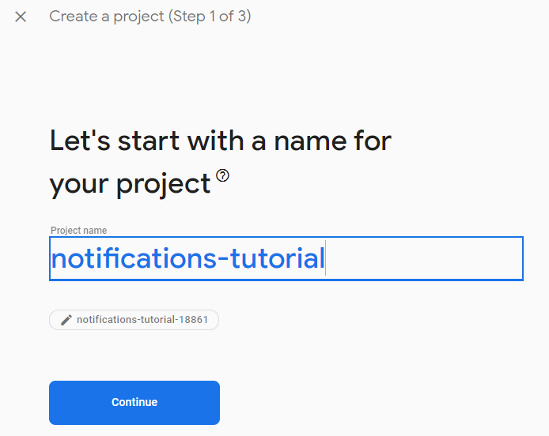
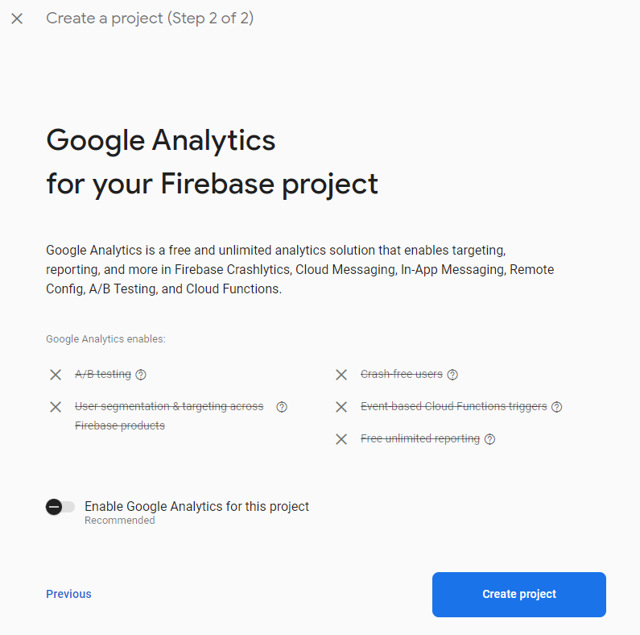
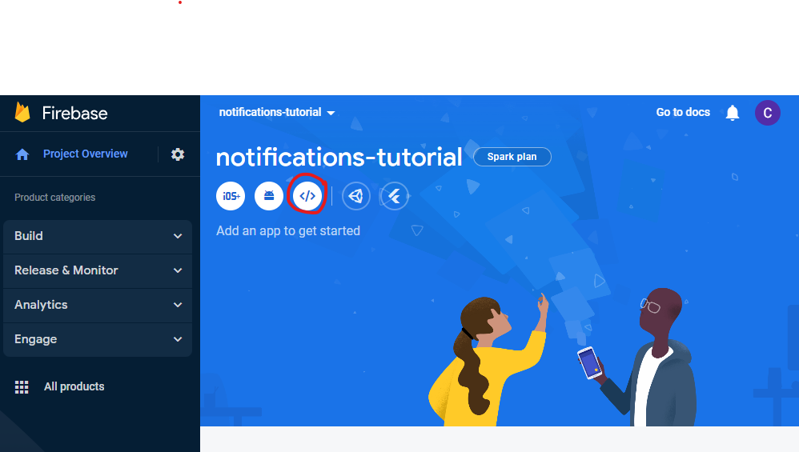
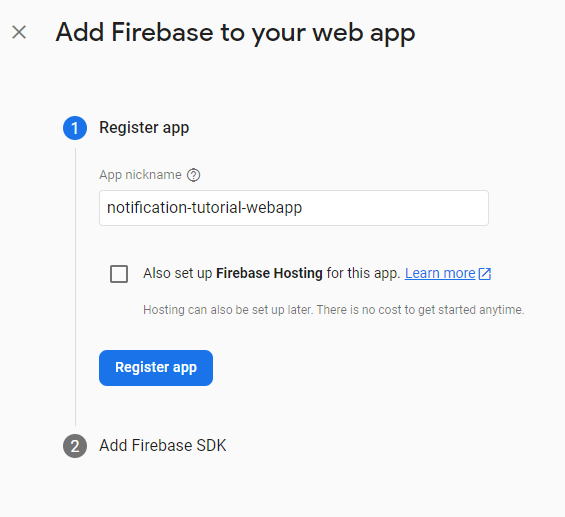
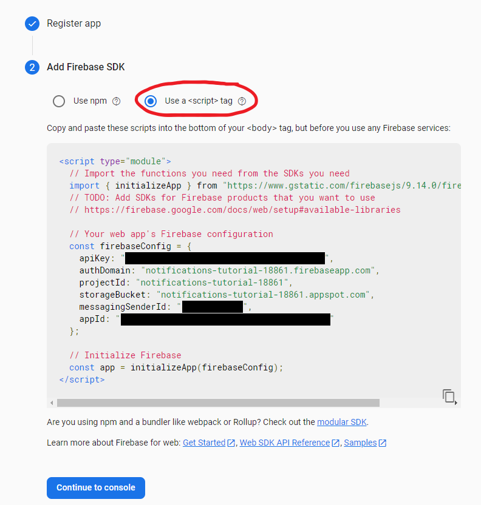

Table of Contents
Learning Outcomes
- Learn how to make a basic web notification
- Handling user input in web notifications
- Cloud notification providers
Learning Activities
Basic Web Notifications
Modern browsers have begun including the Notifications API to allow developers an easy way to create basic web push notifications. In this section, we will walk through the steps on how to create and handle a notification.
- index.html
- notifications.js
<!DOCTYPE html>
<html>
<head>
<script src="notifications.js" defer></script>
</head>
<body>
<div id="headerText"> Let's Make a Notification! </div>
<input id="permissionButton" type="button" value="Click for permission">
<input id="notificationButton" type="button" value="Click for a push notification">
</body>
</html>
Opening this file in our browser we get a webpage that looks like this:
Inside of notifications.js, we want to grab a reference to these elements so that we can use them later
let header = document.getElementById("headerText");
let permButton = document.getElementById("permissionButton");
let notifButton = document.getElementById("notificationButton");
permButton.addEventListener('click', () => {
let promise = Notification.requestPermission().then((result) => {
console.log(result);
});
});
Now, once we click on the button, a pop-up will appear asking for permission to send notifications.
Depending on the user's response, the possible values stored can be 'granted', 'denied',
or 'default'.
Here is an example of what that would look like.
const notif = new Notification('Our new notification', {});
This creates a new notification, but we currently have no way of triggering this notification to appear. Let's
add a listener to this code to connect it to our button.
notifButton.addEventListener('click', () => {
const notif = new Notification('Our new notification', {});
});
Unfortunately, notifications are not able to show from just a local file and requires a hosted website that
uses HTTPS to ensure the notification is sent securely. Because of this, our index.html file will not be able
to display a notification unless you are able to host it somewhere like github pages. However to see what it
would look like, press the button below.Depending on whether or not you gave us permission to send notifications, you may or may not have actually seen a notification there. But how did we do that? Before pushing the notification, you should include a check on the Notification.permission that we got from asking permission in Step 2. Here is how we did it:
notifButton.addEventListener('click', () => {
if (Notification.permission === "granted") {
const notif = new Notification('Our new notification', {});
}
});
notifButton.addEventListener('click', () => {
if (Notification.permission === "granted") {
const notif = new Notification('Our new notification',
{
icon: "https://cdn-icons-png.flaticon.com/512/2431/2431996.png",
body: "A more detailed message about our notification"
});
}
});
To see how our notification has changed, press the button below.
notifButton.addEventListener('click', () => {
if (Notification.permission === "granted") {
const notif = new Notification('Our new notification',
{
icon: "https://cdn-icons-png.flaticon.com/512/2431/2431996.png",
body: "A more detailed message about our notification"
});
notif.addEventListener("click", () => {
document.getElementById("headerText").innerText = "You clicked on the notification!";
});
}
});
By adding this event listener to our button, whenever the notification is clicked on we can make changes accordingly.
In our example, this just changes the text on our screen to display that we clicked on the notification. Below is an
interactive example that tracks the amount of times you have clicked directly on this notification. Handling User Input
Cloud Notifications
For remote notifications through the cloud, we can use Google Firebase.
First, sign up or log in and click "Go to Console"

Next, create a new project.

Enter a name for the project. For this tutorial, we're going to call it "notifications-tutorial".

When prompted about Google Analytics, select no.

Click "Create Project", and wait for Firebase to create your project for you. This may take several minutes.
After creating the Firebase project, you should be on the project's dashboard. Click the Webapp icon
to register a webapp with your firebase project.

Enter a nickname for the webapp. For this tutorial we'll use "notification-tutorial-webapp". You can
also at this point choose to setup firebase hosting for your website, but for this tutorial we're
going to assume you are hosting your website elsewhere.
Click "Register app".

Select "Use a <script> tag" instead of "Use npm". This allows us to make a simple standalone webapp
that uses the Firebase API rather than depending on Node JS packages. You will be shown an html script
element that imports the Firebase API and initializes the app with your authentication keys. Your
firebaseConfig will be unique to your webapp, so make sure you hold on to it and use it
when appropriate. Copy this text to your clipboard.

Paste the script element into your html file from earlier.
<!DOCTYPE html>
<html>
<head>
<script src="_sample_notifications.js" defer></script>
</head>
<body>
<script type="module">
// Import the functions you need from the SDKs you need
import { initializeApp } from "https://www.gstatic.com/firebasejs/9.14.0/firebase-app.js";
// TODO: Add SDKs for Firebase products that you want to use
// https://firebase.google.com/docs/web/setup#available-libraries
// Your web app's Firebase configuration
const firebaseConfig = {
//YOUR FIREBASE CONFIG HERE
};
// Initialize Firebase
const app = initializeApp(firebaseConfig);
</script>
<div id="headerText"> Let's Make a Notification! </div>
<input id="permissionButton" type="button" value="Click for permission">
<input id="notificationButton" type="button" value="Click for a push notification">
</body>
</html>
Next, we import the Firebase messaging API and get a messaging object that allows us to
register out client with Firebase to be able to receive messages.
Standards
The main standard for push notifications is requesting permission from the user to allow your website to send notifications. MDN outlines that "Before an app can send a notification, the user must grant the application the right to do so" [1]. Furthermore, they discuss how push notifications had been abused in the past and that one of the new countermeasures against that is to only request permission after the user gestures in some way that they may want these notifications, for example, clicking a button that says 'Keep Me Notified'. Once permission has been asked for, every notification should check to ensure that the current permission status is 'granted'.
History
Web push notifications are a relatively new innovation to the web development scene, making their history not span a very long way back in time. The first predecessor to notifications through the web is email communication in which websites and companies can send mass emails to all of their users giving an update on whatever it is they desire. In their article What are Push Notificiations - The Ultimate Guide, Gravitec states that "In 2001, RIM created the first email alert system" [3]. This was the first appearance of any type of push notification system, and started out as a functionality for the email app that was only on blackberry phones. Todd Grennan highlights that web push stems off of the idea of mobile push, which originated back in 2009 with the rise of smart phones, however historically web notifications have had a much harder time of being widely used and accepted. This reluctance of integration mainly comes from users not trusting web notifications as much as mobile push notifications, causing a large percent of people to decline websites the permissions necessary [4]. The first addition of web push notifications to browsers came in 2014 as Google added this functionality into Google Chrome. Slowly, thoroughout the next 4 years or so browsers such as Opera, Firefox, Safari, and Edge begin to support this functionality [5].
Our Opinion
As technology becomes more and more integrated into everyones daily life, more and more users will begin getting comfortable with the conceptof web push and help it to grow into a mainstream feature on many websites. We think that this is overall a positive for both web developers and web users. On the side of the web devs, push notifications help to retain visitors and keep people coming back to your site, as well as providing a distinct advantage to marketing by allowing you direct access to the customers [6]. These benefits can lead to more revenue on your site and help to push your site more into the mainstream attention. As for the web users, more websites utilizing push notifications can help to build you a more customized experience on the website, "based on both [your] own preferences as well as historical click behaviour" [6]. With this, users will see more of the content that they would like to see and have it all delivered directly to them through notifications.
Reference List
-
[1]
MDN. Using the notifications API. Web APIs | MDN. Last retrieved November 17, 2022,
from https://developer.mozilla.org/en-US/docs/Web/API/Notifications_API/Using_the_Notifications_API -
[2]
MDN. Notification. Web APIs | MDN. Last retrieved November 17, 2022,
from https://developer.mozilla.org/en-US/docs/Web/API/notification#instance_properties -
[3]
Gravitec. (2019, May 4). What are Push Notifications - The Ultimate Guide. Gravitec.
Last retrieved November 16, 2022, from https://gravitec.net/blog/what-are-push-notifications/ -
[4]
Grennan, T. (2020, January 31). Behind web push notifications: All You Need To Know About Web Messaging's Secret Weapon'. Braze.
Last retrieved November 15, 2022, from https://www.braze.com/resources/articles/behind-web-push-notifications -
[5]
Grennan, T. (2020, January 31). Behind web push notifications: History of web push. Braze.
Last retrieved November 15, 2022, from https://www.braze.com/resources/articles/behind-web-push-notifications-2 -
[6]
Valdez, L. (2022, March 2). 5 Benefits of Web Push Notifications. Freestar.
Last retrieved November 18, 2022, from https://freestar.com/web-push-notifications-benefits/